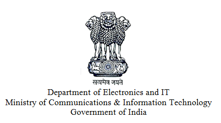
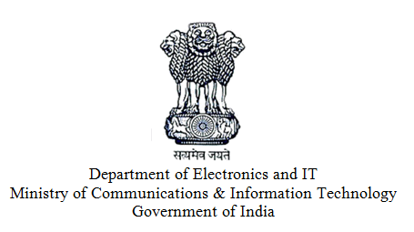
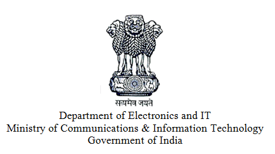
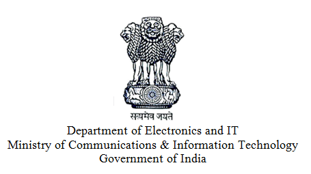
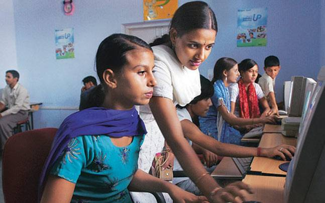

Making one person in every family digitally literate is one of the integral components of the Prime Minister's vision of "Digital India". Pradhan Mantri Gramin Digital Saksharta Abhiyaan is the scheme to make six crore persons in rural areas, across States/UTs, digitally literate, reaching to around 40% of rural households by covering one member from every eligible household by 31st March, 2019. The Scheme would empower the citizens in rural areas by training them to operate computer or digital access devices (like tablets, smart phones etc.), send and receive e-mails, browse Internet, access Government services, search for information, undertake digital payment etc. and hence enable them to use the Information Technology and related applications especially Digital Payments to actively participate in the process of nation building. The Scheme aims to bridge the digital divide, specifically targeting the rural population including the marginalised sections of society like Scheduled Castes (SC) / Scheduled Tribes (ST), Minorities, Below Poverty Line (BPL), women and differently-abled persons and minorities. |
Appreciation of Digital Literacy
To make a person digitally literate, so that he/she can operate digital devices (like Tablets, Smart phones etc) send and receive emails & browse Internet for information and undertake digital payment etc. |
 |
| Eligibility Criteria :- Nominated digitally illiterate person from every eligible rural household. | |
| Age :- 14 to 60 years | |
| Course Duration :- 20 Hours (Minimum 10 Days and Maximum 30 Days) | |
| Medium of Instruction :- Official Languages of India |
The eligible households can nominate one person from their family. The selected person to get themselves enrolled under this programme in a nearest Training Centre/ Common Service Centre (CSC).
Independent external evaluation will be conducted by a National level certifying agency like NIELIT, NIOS, IGNOU, HKCL, ICTACT, NIESBUD etc.
CSC e-Governance Services India Ltd.
238, Okhla Phase III
Behind Modi Mill
New Delhi -110020
Email: helpdesk@pmgdisha.in